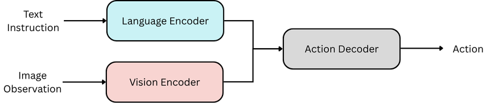
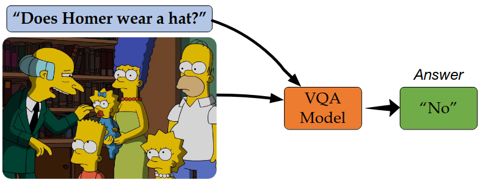

Meeting CAMMA 2026.03
Luc / Shih-Min / Pietro / Nicolas
The task is hard
- Anatomical variability
- Relational reasoning required
- Temporal context essential
- Sparse annotations (compared to raw volume)
Not an object detection task, an temporal anatomy-reasoning task
Data Opportunity
- Volume of videos
- Closed environment
- Smooth transitions
- Redundant structure
Surgical video is structured, constrained, and highly redundant.
From Pixels to Complex Reasoning
1. Perception
- Segmentation
- Detection
- Tracking
3. Spatial-temporal Reasoning
Predict how the surgical scene graph evolves. Not pixel coordinates.
Multimodal Intelligence
2D visual models to 4D multimodal reasoning

Vision-Language-Action Model (VLAM)

Visual Question Answering (VQA)
Multimodal Intelligence
2D visual models to 4D multimodal reasoning
- Vision: perception of the surgical environment
- Language: compression of expert knowledge (Protocol / Ontology)
- Bidirectional conditioning ?
- Language to vision: Image -> Graph -> Action
- Vision to language: Language prior -> Graph constraints -> Vision refinement
What is a meaningful baseline?
- Focus on the "reasoning" part, not the "perception" part
- Naive but existing temporal reasoning structure, not multimodal
- Video encoder
- Temporal model (Transformer)
- Structure tokens (tool, anatomy)